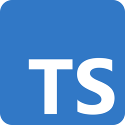

TypeScript:

TypeScript is a programming language developed and maintained by Microsoft. It is a strict syntactical superset of JavaScript and adds optional static typing to the language. TypeScript is designed for the development of large applications and transcompiles to JavaScript. As TypeScript is a superset of JavaScript, existing JavaScript programs are also valid TypeScript programs. TypeScript may be used to develop JavaScript applications for both client-side and server-side execution (as with Node.js or Deno). There are multiple options available for transcompilation. Either the default TypeScript Checker can be used, or the Babel compiler can be invoked to convert TypeScript to JavaScript. TypeScript supports definition files that can contain type information of existing JavaScript libraries, much like C++ header files can describe the structure of existing object files. This enables other programs to use the values defined in the files as if they were statically typed TypeScript entities. There are third-party header files for popular libraries such as jQuery, MongoDB, and D3.js. TypeScript headers for the Node.js basic modules are also available, allowing development of Node.js programs within TypeScript